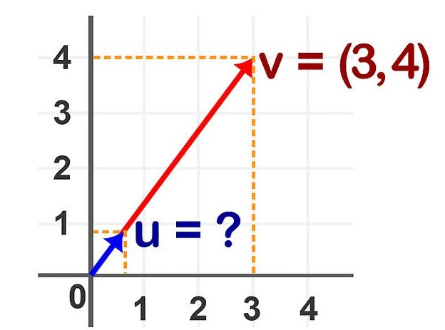
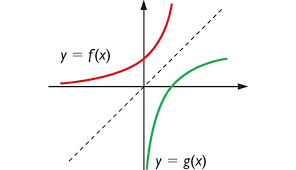
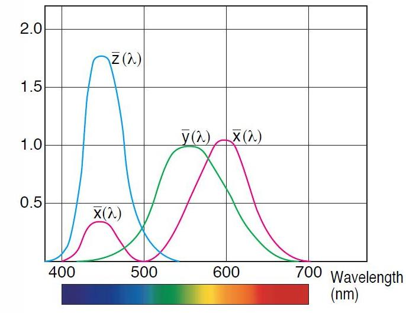

Acerca de HTransfV
Microservicio creado para transformar variables con diferentes tipos de distribución, linealidad y homocedasticidad, mediante el uso de cálculos matemáticos que aseguren una distribución normal al momento de ser reprentado gráficamente, conformada por tres servicios:
| Servicio | Concepto | Imagen |
|---|---|---|
| Normalización | Obtención de valores representados por rango de 0 a 1 mediante la implementación de fórmula matemática de resta. |
 |
| Escalamiento | Análisis de valores a través de una serie de operaciones matemáticas para la integración de un rango númerico. |
 |
| Estandarización | Método en el que se lleva a cabo una distribución de datos de manera homogenea logrando comprimir valores a un parámetro generalizado. |
 |
* Para llevar a cabo el análisis de la información unicamente se podrá seleccionar un método.
Aplicaciones
- Métodos de evaluación
- Minería de datos
- Aprendizaje automático
- Inteligencia Artificial
Especificación técnica
- Servicios: WEB API
- URL: 192.168.100.3:9090/harpa/htransfv
- Métodos: HTTP REST POST
Nota: Este método puede ser combinado con otros métodos de análisis de datos para un mayor enfoque y estudio de la información requerida.
| Glosario | |
| Otras referencias |
- Caso de uso
- HTTP
- Python
Ejemplo de uso
Este ejemplo se centra en determinar la transformación de las variables ventas de productos e ingresos percibidos por la población, identificados por la variable dependiente (ventas) y la variable independiente (población), estableciendo el mejor rango para graficar a través de la selección del método a usar (0: Estandarización, 1: Normalización y 2: Escalamiento) guardado en la variable tipo.
"vars":{
"Población":[2,6,8,8,12,16,20,20,22,26],
"Ventas":[58,105,88,118,117,137,157,169,149,202] },
"tipo": 2,
"NvoMin": 0,
"NvoMax": 100
} Salida: {
"output": {
"exec": {
"funcion": "HTransfV",
"horafin": "2019-04-29 18:55:18.616187",
"horainicio": "2019-04-29 18:55:18.268975",
"tiempoexec": "0:00:00.347212"
},
"result": {
"attach": {},
"vars": {
"Poblaci\u00f3n": [ 0.0, 16.666666666666664, 25.0, 25.0, 41.66666666666667, 58.333333333333336, 75.0, 75.0, 83.33333333333334, 100.0 ],
"Ventas": [ 0.0, 32.63888888888889, 20.833333333333336, 41.66666666666667, 40.97222222222222, 54.861111111111114, 68.75, 77.08333333333334, 63.19444444444444, 100.0 ]
}
}
}
}
*Nota: Para aplicar el método 2 (escalamiento), será necesario incluir los parámetros del mínimo y máximo númerico de los rangos a graficar, identificados como NvoMin y NvoMax.
Llamada a htransfv
Ejemplo convencional de la llamada HTTP al microservicio htransfv.
Llamada desde Python?
Copia, pega y ejecuta!